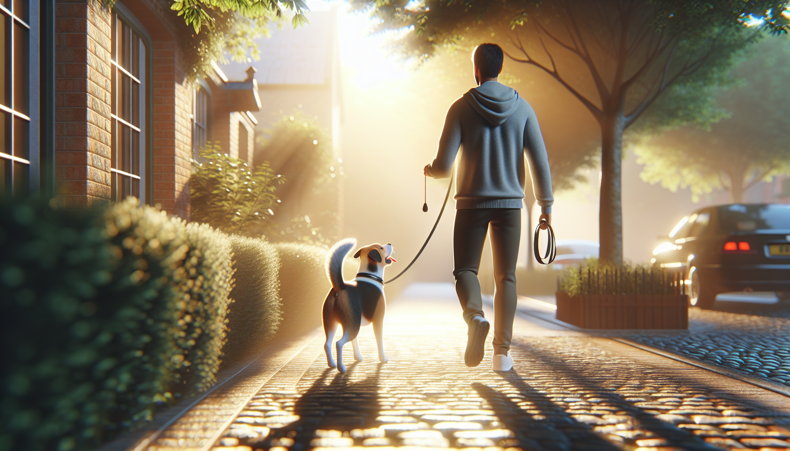

If walks with your dog feel more like being towed down the street than enjoying time together, you are not alone. Leash pulling is one of the most common behavior concerns dog owners face, especially with energetic puppies, newly adopted rescue dogs, and adult dogs who have never been taught how to walk politely. The good news is that leash pulling can be improved with the right training approach, the right equipment, and a little consistency.
Dogs do not pull because they are stubborn or trying to dominate you. Most pull because they are excited, moving too fast, following interesting smells, or have accidentally learned that pulling works. If pulling gets them closer to a tree, another dog, or the park entrance, that behavior gets reinforced. To change it, we need to teach your dog that walking near you is more rewarding than dragging you forward.
In this guide, you will learn exactly how to stop your dog from pulling on the leash using humane, science-backed methods that build focus and cooperation without fear or force.
Understanding why your dog pulls makes training much easier. Pulling is usually not a sign of defiance. It is often a completely normal dog behavior that has never been redirected into a more appropriate skill.
This matters because the best solution is not punishment. It is teaching a new pattern: staying close, checking in, and moving with you makes good things happen.
Training goes more smoothly when your equipment supports learning rather than making pulling worse. While no tool replaces training, the right setup can improve safety and reduce frustration for both you and your dog.
If your dog is very strong, fearful, or reactive, consider working with a qualified positive reinforcement trainer. Safety always comes first.
One of the biggest mistakes owners make is trying to teach leash skills in the most distracting environment possible. Start inside your home or in a quiet yard where your dog can succeed.
Begin by rewarding your dog for being near you. Put your dog on leash, stand still, and the moment they choose to be by your side with a loose leash, mark the behavior with a cheerful “yes” or a click and give a treat. Take one or two steps. If your dog stays with you, reward again. Keep sessions short and easy.
You are building a simple idea: being close to you is valuable. This foundation matters for puppies and rescue dogs especially, because it creates clarity before you add distractions.
Once your dog can follow you around the house or yard without forging ahead, you are ready to practice outside in low-distraction areas.
The stop-and-go method is a classic and effective way to reduce pulling, but it only works when it is done consistently. Here is the principle: pulling makes the walk pause, while a loose leash makes the walk continue.
As soon as your dog pulls and creates tension on the leash, stop walking. Do not yank back. Simply become still. Wait for your dog to release the tension by turning back, stepping toward you, or softening the leash. The moment the leash loosens, mark and move forward again.
This teaches your dog a clear consequence: pulling does not get them where they want to go. A loose leash does.
You can also add a direction change. If your dog surges ahead, calmly turn and walk a few steps the other way, then reward when they catch up and walk with you. This keeps your dog tuned in to your movement and prevents them from rehearsing pulling in a straight line.
Important note: this method takes patience. The first few walks may feel slow, but consistency is what changes the behavior over time.
Many owners focus so much on stopping pulling that they forget to actively reinforce good walking. Dogs learn fastest when we clearly pay for the right behavior.
Reward your dog for:
Food rewards are powerful, but they are not the only option. Real-life rewards can be just as effective. For example, if your dog wants to sniff a bush, ask for a moment of loose leash first, then say “go sniff” and let them investigate. This teaches your dog that polite walking leads to freedom and fun.
For many dogs, especially rescues or sensitive dogs, this approach builds confidence and reduces frustration. Instead of constantly hearing “no,” they learn exactly what works.
Training is easier when your dog is not pushed beyond their ability to focus. Think about the environment as part of the lesson plan. If your dog loses all self-control the second they step outside, the walk may be too exciting for effective learning.
If you have a puppy, keep expectations realistic. Puppies are still learning how the world works. If you have a rescue dog, remember they may need time to settle in and feel safe before they can fully learn new routines.
Sometimes leash training stalls not because the dog cannot learn, but because the pattern is inconsistent. Avoid these common mistakes:
Progress is rarely perfectly linear. Some days will feel easy, and others will not. That is normal. The goal is steady improvement, not perfection overnight.
If your dog’s pulling is combined with lunging, barking, fear, or reactivity, a more individualized training plan may be needed. This is especially common in rescue dogs or dogs with limited early socialization. A certified, reward-based trainer or behavior professional can help you identify triggers, lower stress, and build leash skills safely.
Seek support sooner rather than later if:
Getting help is not a failure. It is a smart step that can protect both your dog’s welfare and your confidence.
Learning how to stop your dog from pulling on the leash takes consistency, patience, and a training plan that makes sense to your dog. Start in easy environments, reward generously, use humane equipment, and remember that every loose-leash step is part of building a new habit. Whether you are raising a puppy, helping a rescue dog settle in, or retraining an adult dog, progress is absolutely possible.
The best leash walking is not about control through force. It is about communication, trust, and teaching your dog that staying connected to you is rewarding. Keep sessions short, celebrate small wins, and stay consistent. Over time, those frustrating tug-of-war walks can become calmer, safer, and much more enjoyable for both of you.
Get our full Dog Training eBook series — new titles added weekly.